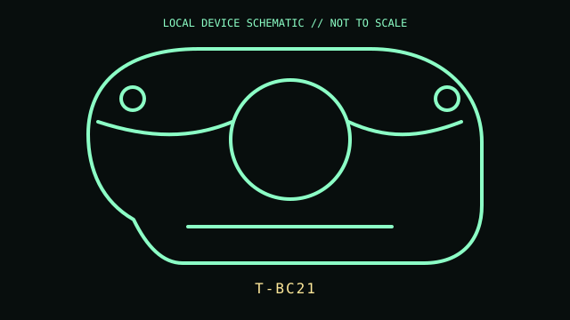

[ MICE AND TRACKBALLS // IDENTIFIED COMPONENT ]
Logitech TrackMan Marble
Wired optical trackball with a symmetrical body, large red tracking ball, and four buttons.

MODEL IDENTIFICATION: Manufacturer identity: T-BC21. Compare the unit label, regional suffix, and revision against the manufacturer's manual before repair or compatibility claims.
Model specifications
| Catalog subcategory | Mice and trackballs |
|---|---|
| Exact model / ID | T-BC21 |
| Model-specific features | USB wired interface; optical ball tracking; four buttons; no dedicated scroll wheel. Exact bundled accessories and labeling can differ between regional packages. |
| Interface and host support | USB HID pointing device. Scrolling and button reassignment may require Logitech software or host accessibility settings; legacy software availability and OS support are limited. |
| Revision / driver caveat | Check for T-BC21 on the underside; do not conflate this with later Marble Mouse variants. Old software may not install on current operating systems, although basic HID tracking can work. |
Preservation and service notes
Remove the ball to clear dust from the three support points; avoid liquids on the optical sensor. Inspect the captive cable near its strain relief and confirm the ball is not substituted.
Record the as-found label, accessories, host OS, driver/firmware version, and test method. Separate observed condition from published specifications; do not treat family-level feature claims as proof of a unit's revision.
Primary manufacturer documentation
- Logitech support — TrackMan MarbleManufacturer setup guide for the TrackMan Marble family; use the bottom label to identify the exact revision.
- Logitech support — TrackMan Marble downloadsManufacturer support/download search; archived software is host-version dependent.
Manufacturer pages may change or retire. Preserve a copy of the applicable manual and note its revision when documenting a physical unit.